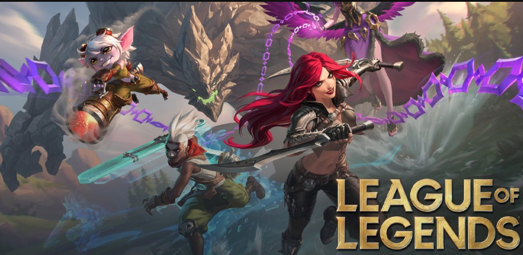
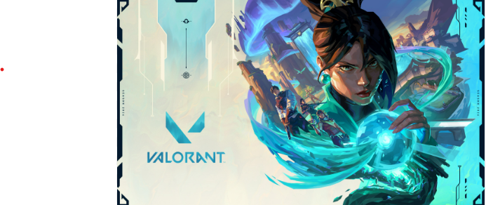
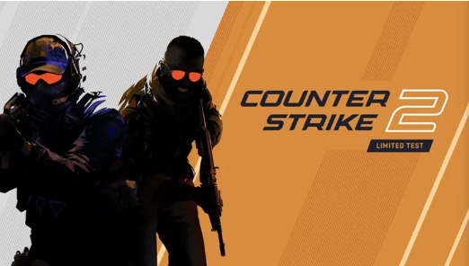

1 Liên Minh Huyền Thoại

Liên Minh huyền thoại là tựa game thuộc thể loại MOBA, được phát triển bởi Riot Games (Hoa Kỳ). Tựa game được ra mắt vào tháng 10 năm 2009 ở trên PC và có mắt ở Việt Nam vào tháng 8 năm 2012.
Một số lý do bạn nên chơi Liên Minh
- Chế độ chơi đa dạng
- Đa dạng tướng
- Sự kiện game hấp dẫn
- Có đội tuyển tôi yêu T1 (đùa thôi hehe)
Link để tải game Tại đây
2 Valorant

Valorant là tựa game bắn súng góc nhìn thứ nhất(FPS) miễn phí được Riot Games phát hành chính thức vào tháng 6 năm 2020. Đến năm 2024, game chính thức phát hành trên nền tảng PlayStation 5 và Xbox Series X/S, tuy nhiên phiên bản trên không có khả năng chơi chung với người dùng trên Windows
Điểm khiến game trở nên hấp dẫn là vì:
- Đặc vụ đa dạng với những skill khác nhau
- Bản đồ đa dạng, phong phú, phù hợp với nhiều chiến thuật
- Hệ thống vũ khí đa dạng
- Đồ họa màu sắc, bắt mắt
Link tải game Valorant Tại đây
3 Counter-Strike 2

Được dịch từ tiếng Anh-Counter-Strike 2 là một trò chơi điện tử bắn súng góc nhìn thứ nhất miễn phí ra mắt năm 2023, được phát triển và phát hành bởi Valve. Đây là phần chính thứ năm trong loạt game Counter-Strike, được sản xuất như một phiên bản cập nhật của phiên bản trước đó, Counter-Strike: Global Offensive.
Một số lý do bạn nên chơi CS2:
- Là game bắn súng FPS hàng đầu
- Hệ thống bản đồ đa dạng
- Hệ thống vũ khí đa dạng
- Có lịch sử phát triển lâu đời
Link tải CS2 Tại đây